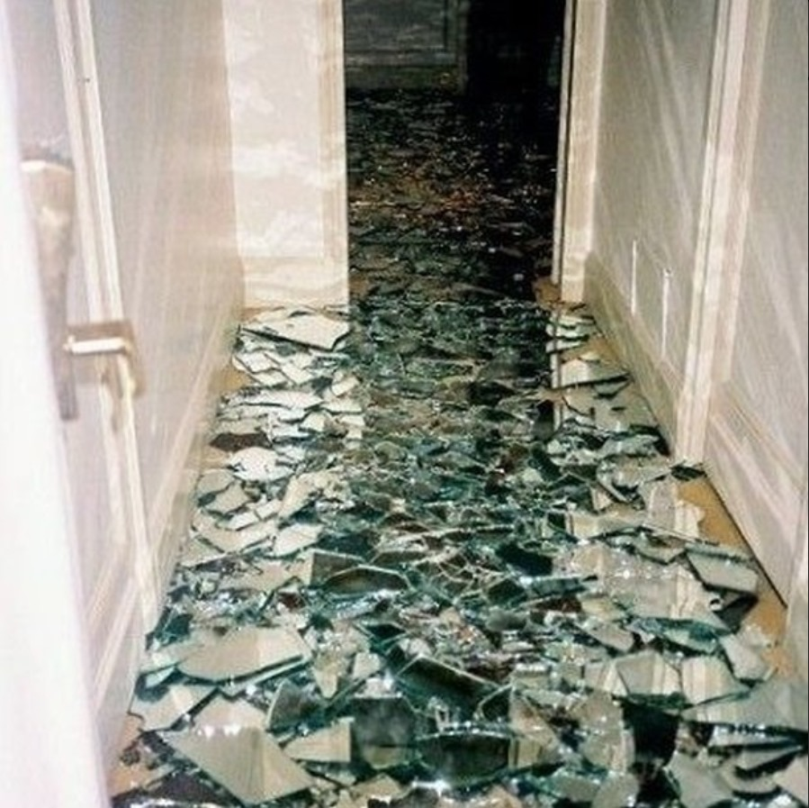

Judas: O Fardo da Traição
Tal pecado, que não tens perdão,
Para este profano, o que lhe resta...
É apenas este fardo...
O da traição.
No calar da noite, a prata reluz
As pratas no bolso, o preço da cruz.
Que por uma promessa manchada de dor,
Silencia-se o homem perante o Senhor.
A sombra do amigo que a fé apagará.
No beijo sombrio, a farsa se dá,
Por um gesto singelo, mortal ironia,
Nasce a traição, se perde a alegria.
Sozinho caminha, o coração treme
O ouro manchado, na alma o que geme.
Um espinho cravado, a cada moeda,
No rosto a vergonha de um condenado.
As moedas a lançar e, no templo ele há de voltar,
Mas o peso na mente não há de afastar.
A árvore o chama, em silêncio o convida,
A corda se enlaça, termina a vida.
No eco da queda, o vento a murmurar,
A história de Judas a eternidade contará.
Herói ou vilão, seu nome se perde,
Na cruz, a redenção sobre a morte se ergue.
Mas quem pode julgar, quem nunca errou,
Se a mão que feriu também pode amar?
No remorso da dor, ouve-se um grito,
Será que a graça também lhe socorre?
Um nome marcado, perdido na glória,
Judas caminha nas sombras da história.
Talvez no juízo, ao acabar os dias,
O perdão divino lhe traga alegrias.
De um homem que, no fundo, foi tão vazio,
Assim se encerra o conto tão frio.
Que a lição perdure, nas almas se faça,
Que o amor prevaleça sobre a desgraça.

Última Pessoa
Pode entrar, pode entrar
Venha! Sinta-se a vontade
Para se sentar, aproveite e aqui está...
Tua xícara de chá.
Pode entrar, pode se sentar
Por favor, nesta bagunça peço para que não repare
A última pessoa que esteve aqui
Fez um enorme estrago dentro de mim.
Não-lhe tenho muito a oferecer
Pois, a última pessoa que esteve aqui
Levou...tudo...
Tudo que eu tinha por aqui.
Cuidado ao abrir as janelas
O estrago foi tanto, mas tanto
Que a pessoa
Deixou-as em pedaços. E, não tive tempo para consertá-las.
Cuidado onde pisar
Acabou que...
Retalhos meus foram deixados espalhados
A última pessoa que esteve aqui, de fato fez um enorme estrago.
Por gentileza, não demores em ir embora
Pois aqui, não se é um bom lugar para se dormir
A última pessoa que esteve aqui
Até meu colchão levara.
E, cuidado ao sair...
a última pessoa que esteve aqui
Bateu a porta com uma enorme força,
Que não tive tempo para comprar outra.